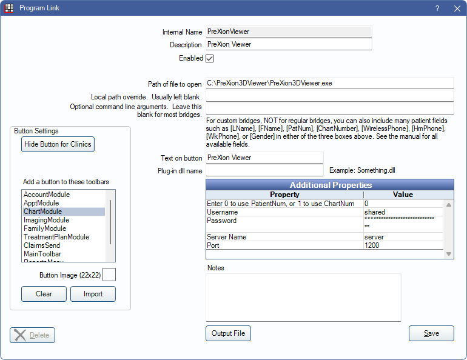

PreXion Bridge
In the Main Menu, click Setup, Program Links, PreXion Viewer.
PreXion is an imaging software. Website: www.prexion.com.
The PreXion Viewer bridge allows users to view images in PreXion. To take new images, see Prexion Acquire Bridge.
Note: New patients should first be launched from the PreXion Acquire Bridge to ensure patient records are created using the same record number (typically PatNum) as Open Dental.
To enable the bridge:
- Check the Enabled box.
- Enter the Path of file to open as shown.
- Enter Additional Properties:
- Enter 0 to use PatientNum, or 1 to use ChartNum: See below for details. This should typically be 0.
- Username: Enter PreXion username.
- Password: Enter PreXion password.
- Server Name: Enter the server name.
- Port: Enter the port specification.
- Set up a clickable bridge button.
- Under Add a button to these toolbars, highlight where to display the button.
- (Optional) Import an image to show on the button (22 x 22 pixels).
- If using clinics, click Hide Button for Clinics. Select which clinics the button should display on.
- Click Save.
Technical Details
Previously, this bridge had to be created as a custom bridge. The following information relates to PreXion bridges that were custom created in Open Dental.
The command line arguments should be similar to this:
-l username -p password -pid [PatNum] servername 1200
or-l username -p password -pid [ChartNumber] servername 1200
Servername is the name of the PreXion server. 1200 refers to the port.